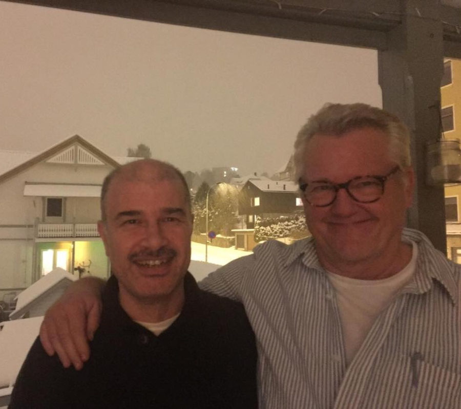

Since 1998
The Institute for Learning Organizations was established in 1998 under the name TQM Center Norway, as a collaboration between researchers, industry and consulting environments.
We have been developing courses on TQM and Lean management for Norwegian universities, municipalities and international businesses. Our founder Bjarne Berg Wig has published eight books on improvement leadership and Obeya.
ILO is part of an R&D program supported by the Research Council of Norway: ALIOS – Accelerated Learning in Organizations and Society.

Meet our experts
Bjarne Berg Wig
Bjarne Berg Wig is an author and sensei with over three decades of experience in quality management, Lean and systems thinking. He has collaborated with Bergen University of Applied Sciences, authored eight professional books, and pioneered programs on leadership and learning organizations. He leads the ALIOS R&D program and is a certified systems thinking trainer.

Samer Hamadeh
Samer Hamadeh, co-founder of ILO, is a systems thinking expert who helps organizations and communities cultivate actionable cultures of learning and innovation that drive meaningful change.
Affiliates & Collaborators
We collaborate with globally recognized organizations like Leonardo Group Americas, Process Excellence, DigiLEAN, Obeya Association and Cabrera Research Lab to help organizations develop Lean, learning and innovation culture.
ALIOS
ILO is a founder and projects manager of ALIOS – Accelerated Learning in Organizations and Society.
Leonardo Group Americas
Obeya for Operations – online training and coaching.
Obeya Association
Knowledge creation and sharing.
Obeya.Global
Founding member of Obeya.Global.
DigiLEAN
Exclusive representative for digiLEAN.tools in the Middle East.
Process Excellence Systems
Business development.
LOS Norge
Initiated by Bjarne Berg Wig in 2015. Knowledge sharing with ILO on Lean and learning culture maturity.
World Climate School
Collaboration agreement. ILO assists WCS in using systems thinking to teach regenerative agriculture and circular economy.
Let's start the conversation
Want to learn more about our offerings, or have specific challenges to address? Reach out.